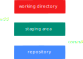

Welcome to
by Ovidiu Andrioaia, David Cirdan, Mateias Luciano and Angelo Xia

Say you're writing a
_
Building a website
Or even writing a short
In all of these cases...
Is here to help.
Version Control helps you manage multiple versions of the same unit of information
2019
23
Oct
#1 Bobby Jones - First Commit
Prepared project files, installed node modules...
24
Oct
#2 Mariah Carey - Added css and js
Added function xyz, refactored initial code...
Without Version Control, you could spend hours wasting your
- T
- I
- M
- E
With Version Control, you can pin down the problem much more easily
def sortByVotes():
Banner('Sort By Votes')
url = "http://www.command.com/comands/browse/sort-by-votes/json"
request = urllib2.Request(url)
response = json.load(urllib2.urlopen(request))
#print json.dumps(response,indent=2)
for c in response:
print "-" * 60
print c['command']
VCS advantages for solo devs:

Archive

Compare and recover

Conserve disk space
VCS advantages for teams:

Historical information

File sharing

Enforcing of good practices
VCS
can be...
CENTRALIZED
or...
DECENTRALIZED
In a CENTRALIZED VCS...

And in a DECENTRALIZED VCS...

SLIDE 3
"Don'ts" in VCS - Georgia Tech - Software Development Proces
Actions

Collaboration

- Backup
- Log
- Remote
- Easy teamwork
Let's say...
#include <stdio.h>
int main()
{
printf("Hello, World!");
return 0;
}
#include <stdio.h>
int main()
{
printf("Hello, World!");
return 0;
}
Blame
SLIDE 5
(PARTE 2) - Intro to Source Control: A Must-Have Tool for Programmers
What is...
TEAM FOUNDATION SERVER ?
TFS is a web application built for software development teams who need a platform that can offer multiple tools, services and resources for a proper collaboration.
Here goes an image
SLIDE 7
(PARTE 2) - VSTS :- What is TFS ( Team foundation server ) ?
SLIDE 8
Git & GitHub Tutorial for Beginners #1 - Why Use Git?
SLIDE 9
Git & GitHub Tutorial for Beginners #2 - Installing Git
SLIDE 10
Git & GitHub Tutorial for Beginners #3 - How Git Works
SLIDE 11
Git & GitHub Tutorial for Beginners #4 - Creating a Repository
Staging

import React, { useState } from 'react';
function Example() {
const [count, setCount] = useState(0);
return (
<div>
<p>You clicked {count} times</p>
<button onClick={() => setCount(count + 1)}>
Click me
</button>
</div>
);
}